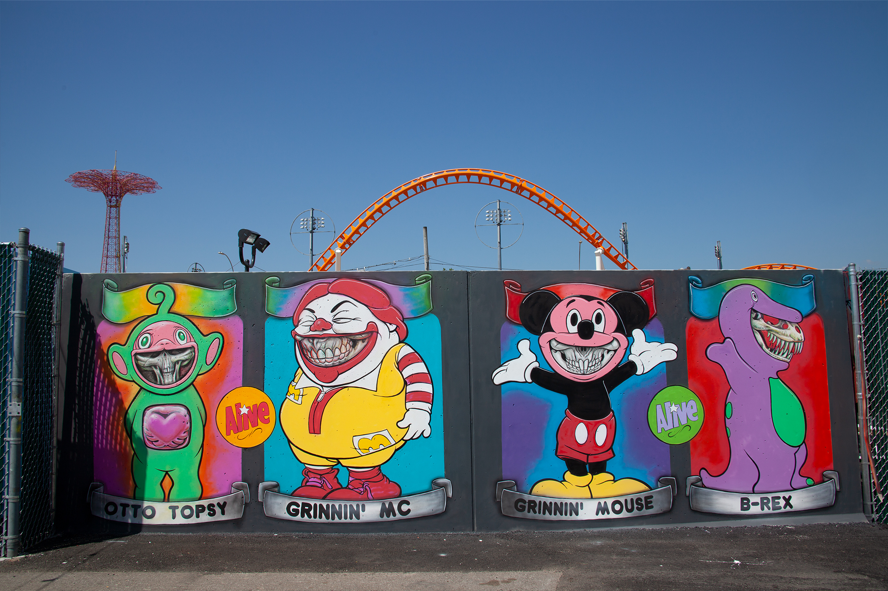

Coney Island Mural

Notes
Ron English’s “Grinnin McB” mural for the inaugural season of Coney Art Walls in Brooklyn, New York.
Preparatory Mockup


Ron English’s “Grinnin McB” mural for the inaugural season of Coney Art Walls in Brooklyn, New York.